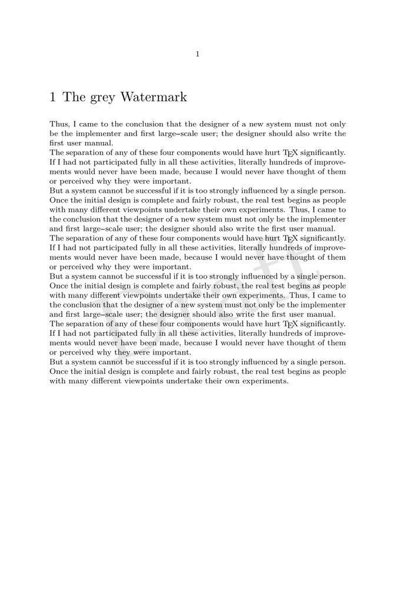

Here is a simple example of a 'Draft' watermark.
-
\defineoverlay[WatermarkOverlay] [{\framed[frame=off,foregroundcolor=gray] {\scale[sx=12,sy=12] {\rotate[rotation=20.0]{Draft}}}}] \setupbackgrounds[page][background=WatermarkOverlay] \starttext \chapter{The grey Watermark} \input knuth \input knuth \input knuth \stoptext
- 